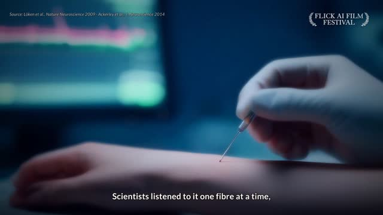
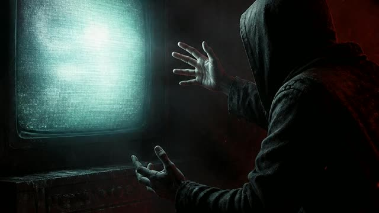

🌐 My sites
🎬 Music videos & story videos
The Slowest Nerve (draft) NEW

▶ Open in Google Drive🔒 Private: opens only when you're signed in to your Google account.
Pink and Green
⬇ downloadIs It a Transformer?
⬇ downloadREWIND: The Night Shift in Your Head
⬇ downloadObsessed with The Guest
▶ Open in Google Drive🔒 Private: opens only when you're signed in to your Google account.
Oct 15: A Real Transformer?

▶ Watch on YouTubeThe Hugging Face Attack: The Complete Story
▶ Watch on YouTube🎵 Songs & audio
Steel That Learned to Walk – Red Light, Teal Light
Steel That Learned to Walk – The Dream Won't Stop
Night Shift in Your Head – Fire Together, Wire Together
Night Shift in Your Head – Eighty-Six Billion Stars
Pink and Green
Osaka Night Run
The Mc Family
Lost Media Hunter
Narrator voice samples (all 14)
🌱 New this week
🧩 Apps not yet published
Test builds. A few need the internet or a camera/mic to fully work, and some work best in Chrome.
not yet publishedカウント一発count-ippatsunot yet publishedでか文字deka-mojinot yet published議事メモgiji-memonot yet publishedはかるだけhakaru-dakenot yet publishedいろあわせiroawasenot yet publishedかんばん紙kanban-kaminot yet publishedキッチンタイマーkitchen-timernot yet published文字のせmoji-nosenot yet published読み上げ板yomiage-itanot yet publishedEye Rest (目の体操)me-no-taisounot yet publishedけしゴムkeshigomunot yet publishedきりぬきkirinukinot yet publishedスペルチェックカメラspell-cameranot yet publishedわかりやすくwakariyasukunot yet publishedいきをすうiki-wo-suunot yet publishedひと押し質問one-tap-ask
🎮 Games not yet published
Stored in your Google Drive (🔒 private, sign in to download). Unzip and run on your Ubuntu PC.